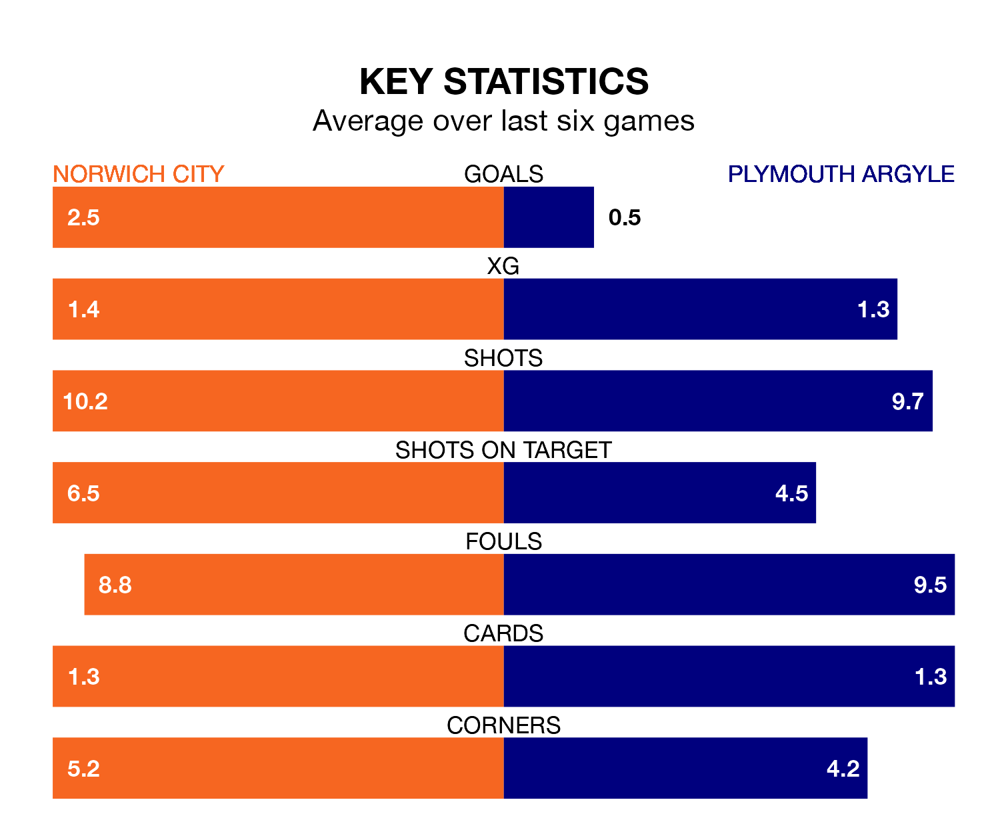

Norwich City are heavy favourites to keep all three points at home in Friday's kick-off against Plymouth Argyle.
The Canaries, who sit sixth in EFL Championship with 38 games played, are priced at 1.5 to seal victory at Carrow Road.
Sitting 12 places and 20 points behind them in the table, Plymouth are 5.7 to win with *Betting Company*, while the draw is at 4.4.
With 69 goals in 38 games so far this season, Norwich are scoring more than average in the league with 1.8 goals per game. And they are conceding at an average rate, letting in 54 goals at a rate of 1.4 per game.
Plymouth, meanwhile, are average scorers, with 1.4 goals per game. They have conceded 1.6 goals per game.
In Morgan Whittaker, Argyle have one of the league's sharpest shooters so far this season. He has notched 18 goals in 38 appearances, to sit second in the scoring charts.
His goal rate of one every 181 minutes is slightly quicker than that of Joshua Sargent, City's top scorer with a goal every 91 minutes, and a total of 13 goals in 18 games.
The Canaries are in good form in EFL Championship, with four wins and a draw from their last six games.
With a win and a draw over that period, the Pilgrims' form is much worse – they have taken four points from 18, compared to the home team's 13.
Norwich's last match was on March 16, a 3-0 win against Stoke City, with Ashley Barnes, Gabriel Sara and Sargent getting the goals for the Canaries.
Plymouth lost 1-0 against Preston North End last time out, also on March 16.
Updated: 12:39 (UTC), 26/03/24